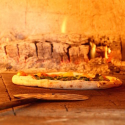

<!DOCTYPE html>
<html>
<head>
  <link href='https://fonts.googleapis.com/css?family=Josefin Slab' rel='stylesheet'>
  <style>
  body {
      font-family: 'Josefin Slab';font-size: 22px;
      color: black;
  }
  </style>
  </head>
  </html>
    <body background="b2.jpg">
    <link rel="stylesheet" type="text/css" href="css/bootstrap.css">
      <link rel="stylesheet" type="text/css" href="css/styles.css">
  <title> See Santa Barbara </title>
  <script src="http://code.jquery.com/jquery-3.3.1.min.js"
  integrity="sha256-FgpCb/KJQlLNfOu91ta32o/NMZxltwRo8QtmkMRdAu8="
  crossorigin="anonymous"></script>
<script type="text/javascript" src="js/custom.js"></script>
  <script src="https://ajax.googleapis.com./ajax/libs/jquery/3.3.1/jquery.min.js"></script>


<body>
    <ul>
      <ul class="nav nav-pills navbar-right">
      <li><a href="index.html">Home</a></li>
      <li><a href="blog.html">Blog</a></li>
      <li><a href="guides.asp">Guides</a></li>
      <li><a href="about.asp">About</a></li>
      <li><a href="Contact.asp">Contact</a></li>
    </ul>

  <center> <h1> A Weekend Guide to Santa Barbara </h1></center>
  <div id="article">
    <p style="text-center" style="width:50%">It's time to take a trip to the Riviera! The American Riviera. We're heading to Santa Barbara, California for the weekend!

      The gorgeous city of Santa Barbara, which sits along a south-facing curve of California, has so much to offer visitors. Coastal views with a backdrop of the mountains, old Spanish style architecture throughout the town, a bustling and thriving culinary scene, luxurious resorts and spas, trendy art-filled neighborhoods, and so much more. Come here once and I guarantee you'll be leaving with your second visit already planned!

Santa Barbara is a perfect destination for families, couples, and even solo travelers of all ages and backgrounds. Use this travel guide to plan your trip and find out where to eat, where to stay, and what to do in Santa Barbara during your visit.
If you're looking for places to eat in Santa Barbara, rest assured, you will not be leaving hungry. This city is full of so many wonderful places to eat with all different types of cuisines, ambiances, and experiences that it will even appease the pickiest of foodies.</p>
</div>
<p><strong>WHERE TO EAT:</strong></p>
  <div class="row">
      <div class="column">
        
        
        
      </div>

      <div class="row">
        <div class="column">
          
          
          
        </div>


<p><strong>WHERE TO STAY:</strong></p>
<p> Santa Barbara's premiere hostel/hotel sits right along the trendy Funk Zone area, making it perfect for people who want to explore this neighborhood or walk around the Urban Wine Trail.
          The Wayfarer offers both private and dorm-style rooms, which are great options for people looking for a more affordable accommodation in the Santa Barbara area.
          If you want an ultimate luxury experience while visiting Santa Barbara, look no further than the Four Seasons Resort The Biltmore Santa Barbara.
          This magical wonderland of natural gardens and Spanish architecture is conveniently tucked away in the exclusive enclave of Montecito.
          It is a beautiful property with beach access and private gardens, spacious rooms with Spanish style influence and modern conveniences, and many more on-site amenities to enjoy. It is our hotel of choice when we visit Santa Barbara.</p>

</head>
</body>
<div class="container" style="margin-top: 8%;">
<div class="col-md-6 col-md-offset-3">
<div class="row">
<div id="logo" class="text-center">
<h1>Search <em> See Santa Barbara...</em></h1>
</div>
<form role="form" id="form-buscar">
<div class="form-group">
<div class="input-group">
<input id="1" class="form-control" type="text" name="search" placeholder="Search..." required/>
<span class="input-group-btn">
<button class="btn btn-success" type="submit">
<i class="glyphicon glyphicon-search" aria-hidden="true"></i> Search
</button>
</span>
</div>
</div>
</form>
</div>
</div>
</div>
</html>
